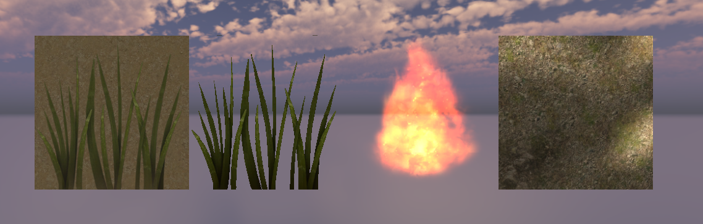

Unity Shader Study
During my military service, I studied this to get used to Unity and shaders written in HLSL language.
First of all, I have four shaders which are applied on plane.
Left two are grass plains. First grass with background is implemented to study UV coordinates and put two sprites together. I learned how to represent transparent and transparent mask sprite through second grass plain. Moreoever, second grass is able to move because I add modifications on vertex shader.
Fire effect was helpful to reveiw drawing transparent image and to learn how fire generally works. Actually, the last plain contains four unique images. I could learn how to use vertex color efficiently.
Moreover, I have eight different type of Space Robot Kyle.
Fresnel Kyle is located on the left side. A characteristic of fresnel lighting is that outside part is bright. The Kyle next to fresnel Kyle is hologram Kyle. It has bright outline and horizontal lines which moves up continually.
Third one is cubemap reflection Kyle. It reflects skybox. You might notice that skybox image on its body part. The last Kyle is toon rendering Kyle with 2 pass. First pass draws black outline from back face. Second pass draws Kyle with toon shading.
Left Kyle looks typical Kyle but it is semi-transparent. As you might already know, hologram Kyle which covered upper description expose everything in its inside. However, this semi-transparent Kyle does not. It is implemented first pass which writes only depth value. Thus, I made improved hologram Kyle which apply depth pass on previous version.
Third one is glittering Kyle his determined parts are bright. The final Kyle is burning Kyle. Based on its parameter and given noise texture, Kyle burns out.
The last shader I implemented is water shader.
It needs all of my knowledges which I got during this shader study. It contains light calculation, modifications UV values with noise texture, cubemap reflection.